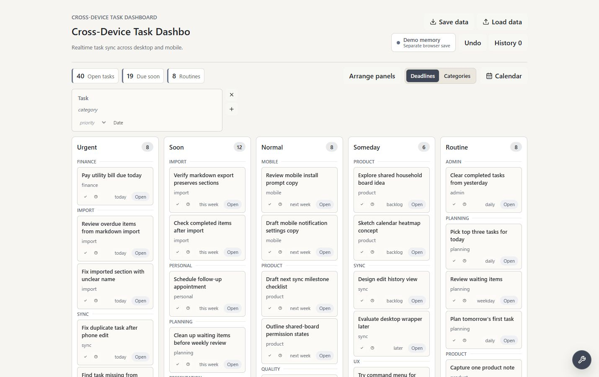

Full-stack product project
Cross-Device Task Dashboard
A hosted beta task dashboard that supports account-scoped task sync through Supabase, with local/demo fallback, backup/restore, stable ordering, and workflow-oriented task views.

Engineering highlights
- Implemented Google OAuth and Supabase-backed account storage for cross-device task persistence.
- Built typed mapping between local task objects and remote database rows.
- Handled cloud upserts, remote retrieval, deletes, sort order, and local/demo fallback behavior.
- Added backup and restore flows for user-controlled data portability.
Use the beta
The hosted beta is live at tasks.phantom.moe. It is meant for trying the workflow now while the interface and sync behavior continue to improve.